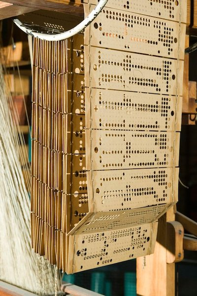
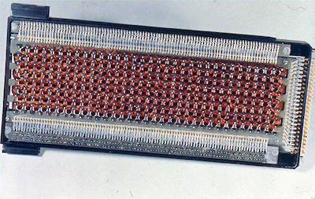
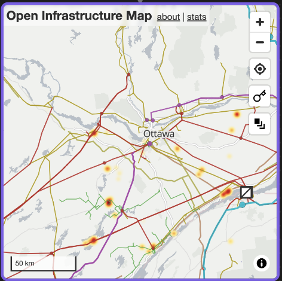

<!DOCTYPE html>
<html lang="en">
  <head>
    <meta charset="utf-8" />
    <meta name="viewport" content="width=device-width, initial-scale=1.0, maximum-scale=1.0, user-scalable=no" />

    <title></title>
    <link rel="stylesheet" href="dist/reveal.css" />
    <link rel="stylesheet" href="dist/theme/night.css" id="theme" />
    <link rel="stylesheet" href="plugin/highlight/zenburn.css" />
	<link rel="stylesheet" href="css/layout.css" />
	<link rel="stylesheet" href="plugin/customcontrols/style.css">


    <script defer src="dist/fontawesome/all.min.js"></script>

	<script type="text/javascript">
		var forgetPop = true;
		function onPopState(event) {
			if(forgetPop){
				forgetPop = false;
			} else {
				parent.postMessage(event.target.location.href, "app://obsidian.md");
			}
        }
		window.onpopstate = onPopState;
		window.onmessage = event => {
			if(event.data == "reload"){
				window.document.location.reload();
			}
			forgetPop = true;
		}

		function fitElements(){
			const itemsToFit = document.getElementsByClassName('fitText');
			for (const item in itemsToFit) {
				if (Object.hasOwnProperty.call(itemsToFit, item)) {
					var element = itemsToFit[item];
					fitElement(element,1, 1000);
					element.classList.remove('fitText');
				}
			}
		}

		function fitElement(element, start, end){

			let size = (end + start) / 2;
			element.style.fontSize = `${size}px`;

			if(Math.abs(start - end) < 1){
				while(element.scrollHeight > element.offsetHeight){
					size--;
					element.style.fontSize = `${size}px`;
				}
				return;
			}

			if(element.scrollHeight > element.offsetHeight){
				fitElement(element, start, size);
			} else {
				fitElement(element, size, end);
			}		
		}


		document.onreadystatechange = () => {
			fitElements();
			if (document.readyState === 'complete') {
				if (window.location.href.indexOf("?export") != -1){
					parent.postMessage(event.target.location.href, "app://obsidian.md");
				}
				if (window.location.href.indexOf("print-pdf") != -1){
					let stateCheck = setInterval(() => {
						clearInterval(stateCheck);
						window.print();
					}, 250);
				}
			}
	};


        </script>
  </head>
  <body>
    <div class="reveal">
      <div class="slides"><section  data-markdown><script type="text/template"><!-- .slide: class="drop" data-background-opacity="0.5" data-background-image="daniel-lincoln-unsplash.png" -->
<div class="" style="position: absolute; left: 0px; top: 0px; height: 700px; width: 960px; min-height: 700px; display: flex; flex-direction: column; align-items: center; justify-content: center" absolute="true">

<div align="left">

### Archaeology

#### or the theoretical framework for this class


</div>

<small>

[https://shawngraham.github.io/hist1900/assets/slides/jan11](https://shawngraham.github.io/hist1900/assets/slides/jan11)

</small>
</div>

<aside class="notes"><p>Why Archaeology?</p>
<p>Archaeology explores what it means to be human, through its material traces. It&#39;s not just &#39;old&#39; things, though that&#39;s where we started, in archaeology.</p>
<p>Talking about the &#39;material&#39; necessarily involves </p>
<p>But is the internet &#39;material?&#39;. Today&#39;s talk explores how I think about the world, given my training as an archaeologist, and how that directs my attention to the elements that I think are important to explore in the context of this class. This class is an exploration: that&#39;s why I put it on. I design all of my classes around a question I want to learn more about. </p>
<p>background image: Daniel Lincoln, unsplash; Packard Plant in Detroit</p>
</aside></script></section><section  data-markdown><script type="text/template"><!-- .slide: class="drop" -->
<div class="" style="position: absolute; left: 0px; top: 0px; height: 700px; width: 960px; min-height: 700px; display: flex; flex-direction: column; align-items: center; justify-content: center" absolute="true">

[τέχνη](https://en.wiktionary.org/wiki/%CF%84%CE%AD%CF%87%CE%BD%CE%B7#English "wikt:τέχνη")

'craft', 'art', 

proto indo-european "Teks-" meaning "to weave," also "to fabricate"

also implies episteme, or a system of knowledge, of practical things
</div>

<aside class="notes"><p>&#39;digital&#39; pertains to the digits, fingers and toes, and counting under ten; the sense of discrete numbers and computation from that is a 20th century develop of the term, as opposed to &#39;analog&#39; systems where the value is continuous.</p>
</aside></script></section><section  data-markdown><script type="text/template"><!-- .slide: class="drop" -->
<div class="" style="position: absolute; left: 0px; top: 0px; height: 700px; width: 960px; min-height: 700px; display: flex; flex-direction: column; align-items: center; justify-content: center" absolute="true">

<split no-wrap>





</split>
</div>

<aside class="notes"><p>Just a few items to show you some of the <em>physicality</em> of our current computational moment, the physicality of its past; here memory storage. Note in the picture of the workers using the Jacquard Loom - who&#39;s doing the work? Ditto, Core Rope Memory SG: ask students to call out dates for these things.</p>
</aside></script></section><section  data-markdown><script type="text/template"><!-- .slide: class="drop" -->
<div class="" style="position: absolute; left: 0px; top: 0px; height: 700px; width: 960px; min-height: 700px; display: flex; flex-direction: column; align-items: center; justify-content: center" absolute="true">

We need archaeology not just because of the *things* of this history we want to explore, but also because of the *places* of this history!


</div></script></section><section  data-markdown><script type="text/template"><!-- .slide: class="drop" -->
<div class="" style="position: absolute; left: 0px; top: 0px; height: 700px; width: 960px; min-height: 700px; display: flex; flex-direction: column; align-items: center; justify-content: center" absolute="true">


Archaeology is the science of human duration.
</div></script></section><section  data-markdown><script type="text/template"><!-- .slide: class="drop" -->
<div class="" style="position: absolute; left: 0px; top: 0px; height: 700px; width: 960px; min-height: 700px; display: flex; flex-direction: column; align-items: center; justify-content: center" absolute="true">



[https://openinframap.org](https://openinframap.org/#11.01/45.3265/-75.7376/L,O,P,S,T)
</div></script></section><section  data-markdown><script type="text/template"><!-- .slide: class="drop" data-background-opacity="0.5" data-background-image="bluebricks.png" -->
<div class="" style="position: absolute; left: 0px; top: 0px; height: 700px; width: 960px; min-height: 700px; display: flex; flex-direction: column; align-items: center; justify-content: center" absolute="true">

# The point 

<split even gap="3">

The history of the net has *many* different aspects, how can we bring order to this?

This is what 'theory' is for. Theory is a framework for understanding the world & directing your attention.

Theory tells you which bits are important. Theory helps frame your questions.

But there are many different theories to order our observations.
</div>

<aside class="notes"><p>I&#39;m going to do a whistle stop tour through a variety of archaeological/historical theories to highlight various elements of the archaeological theories that inform my scholarship, so that you understand what the questions are that inform our class. (and &#39;whistlestop&#39; is a metaphor from an earlier era of networked communication! today&#39;s version might be crossposting the same message across social media)</p>
</aside></script></section><section  data-markdown><script type="text/template"><!-- .slide: class="drop" -->
<div class="" style="position: absolute; left: 0px; top: 0px; height: 700px; width: 960px; min-height: 700px; display: flex; flex-direction: column; align-items: center; justify-content: center" absolute="true">

## Questions From A Worker Who Reads

[Click to read poem here](https://allpoetry.com/Questions-From-A-Worker-Who-Reads)

Bertolt Brecht
</div>

<aside class="notes"><p>This is a theoretical position. What would it direct our attention to, in the context of the history of the internet?</p>
</aside></script></section><section  data-markdown><script type="text/template"><!-- .slide: class="drop" -->
<div class="" style="position: absolute; left: 0px; top: 0px; height: 700px; width: 960px; min-height: 700px; display: flex; flex-direction: column; align-items: center; justify-content: center" absolute="true">

## Space/Economy


"2 Weeks to 2 Minutes"

See also [Roman Empire](https://orbis.stanford.edu/)
</div>

<aside class="notes"><p>Space economy refers to the way investments in infrastructure contract the experience of space between places. Ray Laurence makes a persuasive case for how the creation of all-weather roads in the Roman republic turned Italy into a cohesive unit, thus setting the stage for later expansion. But infrastructure has very long term effects: <a href="https://web.econ.ku.dk/pabloselaya/papers/RomanRoads.pdf">https://web.econ.ku.dk/pabloselaya/papers/RomanRoads.pdf</a> thus when we think of the internet as a &#39;place&#39; it also means that the places with which it intersects are going to be impacted long term. When things become &#39;networked&#39; - and a network exists whenever there is a relationship between two or more <em>things</em> - that brings us into Complexity theory and thinking about the effects of what flows over networks.</p>
</aside></script></section><section  data-markdown><script type="text/template"><!-- .slide: class="drop" -->
<div class="" style="position: absolute; left: 0px; top: 0px; height: 700px; width: 960px; min-height: 700px; display: flex; flex-direction: column; align-items: center; justify-content: center" absolute="true">

## Complicated vs Complex

A rocket ship versus the Queensway

- &shy;<!-- .element: class="fragment" data-fragment-index="1" -->difference between complicated & complex;

- &shy;<!-- .element: class="fragment" data-fragment-index="2" -->idea of emergence

- &shy;<!-- .element: class="fragment" data-fragment-index="3" -->particular network shapes enable emergence

- &shy;<!-- .element: class="fragment" data-fragment-index="4" -->feedback is a big part of this
</div>

<aside class="notes"><p>I&#39;m building up a picture here. We&#39;ve got individuals enmeshed in systems that collapse time and space, and these systems have real-world effects. Complex systems are useful for considering what happens when you&#39;ve got many different kinds of things interacting in non-linear ways - like the Queensway. The things we study are often <em>emergent</em> from lower level elements.</p>
</aside></script></section><section  data-markdown><script type="text/template"><!-- .slide: class="drop" -->
<div class="" style="position: absolute; left: 0px; top: 0px; height: 700px; width: 960px; min-height: 700px; display: flex; flex-direction: column; align-items: center; justify-content: center" absolute="true">

## Assemblage Theory 

*agencement*, things come together
- meaning depends on context
	- both internal, within
	- external, in time
	- external, in space
	- nothing is meaningful on its own
</div>

<aside class="notes"><p>see gavin lucas p71</p>
<p>old germanic word &#39;thing&#39; means an assembly or gathering</p>
<p>how does a thing gather unto itself? human agency isn&#39;t what matters but the force of agency, or &#39;how actions are distributed across a network or assemblage composed of both humans and non-humans&#39;.</p>
<p>a jug is not purely a human creation. form depends on an assembly: &#39;a coming-together of clay, a fast wheel, a kiln, a skilled potter...&#39;</p>
</aside></script></section><section  data-markdown><script type="text/template"><!-- .slide: class="drop" -->
<div class="" style="position: absolute; left: 0px; top: 0px; height: 700px; width: 960px; min-height: 700px; display: flex; flex-direction: column; align-items: center; justify-content: center" absolute="true">

[potter video](https://youtu.be/9c30nN1rp8g)

- there are no captions on this video
- Just watch how the clay responds to the potter's intuition
- you can't divide the world into physical objects/properties and human agency; 
- it's the interaction between human and object that matters, the space in-between
- This is sometimes called 'material engagement theory'
</div>

<aside class="notes"><p>see gavin lucas &#39;archaeological situations&#39; 71-73
labos malafouris takes example of pottery making a pot. They can&#39;t tell you or explain exactly what they&#39;re doing. The pot that emerges is driven by an idea in their mind, but it reacts to the realities of the clay, the wheel, the water, previous pots made, ambitions for future pots. (same is true of code!)  p73 material agency argues&#39; That mental acts do not just occur in our heads, or even in our hands and fingers, but extend outward into the things around us&#39; - parallels with extended cognition - but for malafouris the agency of the objects super important</p>
</aside></script></section><section  data-markdown><script type="text/template"><!-- .slide: class="drop" -->
<div class="" style="position: absolute; left: 0px; top: 0px; height: 700px; width: 960px; min-height: 700px; display: flex; flex-direction: column; align-items: center; justify-content: center" absolute="true">

## Perspectivism

- the way we record information **matters** 
- we try to mirror 'natural breakages', but there are many ways to make the decisions
- these categories *emerge* from our engagement with the material
	- like with the potter and the wheel; if we don't think the relationship with the clay matters, you don't even look to see it
</div></script></section><section  data-markdown><script type="text/template"><!-- .slide: class="drop" -->
<div class="" style="position: absolute; left: 0px; top: 0px; height: 700px; width: 960px; min-height: 700px; display: flex; flex-direction: column; align-items: center; justify-content: center" absolute="true">

## So, if we pull that altogether...?

Well, here's what *I* think...
</div></script></section><section  data-markdown><script type="text/template"><!-- .slide: class="drop" -->
<div class="" style="position: absolute; left: 0px; top: 0px; height: 700px; width: 960px; min-height: 700px; display: flex; flex-direction: column; align-items: center; justify-content: center" absolute="true">

- a network is present whenever there is a relationship between two entities along which information flows. (_argh! we'll need a definition of information!_)
- networks form a substrate for social life, and humans aren't the only things that can have a social life
- networks leave physical traces
</div></script></section><section  data-markdown><script type="text/template"><!-- .slide: class="drop" -->
<div class="" style="position: absolute; left: 0px; top: 0px; height: 700px; width: 960px; min-height: 700px; display: flex; flex-direction: column; align-items: center; justify-content: center" absolute="true">

- more complex phenomena can emerge from interactions in certain network shapes
- networks also provide a formal mechanism through which computation can happen - computation is inherent in the shape of the network
- the components of a networked history are not just the technical objects, but also the assemblage
</div></script></section><section  data-markdown><script type="text/template"><!-- .slide: class="drop" -->
<div class="" style="position: absolute; left: 0px; top: 0px; height: 700px; width: 960px; min-height: 700px; display: flex; flex-direction: column; align-items: center; justify-content: center" absolute="true">

- material agencies extend cognition into our things 
- meaning is relational
</div></script></section><section  data-markdown><script type="text/template"><!-- .slide: class="drop" -->
<div class="" style="position: absolute; left: 0px; top: 0px; height: 700px; width: 960px; min-height: 700px; display: flex; flex-direction: column; align-items: center; justify-content: center" absolute="true">

## Now What do *YOU* Think?

- take a few moments to jot down the parts that are maybe confusing
- talk it out with your neighbours in your von Neumann neighbourhood, eg:


</div></script></section><section  data-markdown><script type="text/template"><!-- .slide: class="drop" -->
<div class="" style="position: absolute; left: 0px; top: 0px; height: 700px; width: 960px; min-height: 700px; display: flex; flex-direction: column; align-items: center; justify-content: center" absolute="true">

To my mind, all of this implies the following questions we might ask as we *inquire* into the internet

 - what are the social/political/economic contexts of the people, places, things?
- what are the assemblages that make this *thing* up?
- how do those assemblages extend in time or space?
</div></script></section><section  data-markdown><script type="text/template"><!-- .slide: class="drop" -->
<div class="" style="position: absolute; left: 0px; top: 0px; height: 700px; width: 960px; min-height: 700px; display: flex; flex-direction: column; align-items: center; justify-content: center" absolute="true">

- how do networks intersect (which is distinct from interconnect)?
- what drives network evolution? who/what are key players? 
- how do we study such things?
</div></script></section><section  data-markdown><script type="text/template"><!-- .slide: class="drop" -->
<div class="" style="position: absolute; left: 0px; top: 0px; height: 700px; width: 960px; min-height: 700px; display: flex; flex-direction: column; align-items: center; justify-content: center" absolute="true">

### Keep these questions in mind when you read academic literature.

*Answering* those questions is how you get started [reading like an academic](https://shawngraham.github.io/hist1900/3.Technical_Help/4.How%20To%20Read%20An%20Academic%20Article/)
</div></script></section><section  data-markdown><script type="text/template"><!-- .slide: class="drop" -->
<div class="" style="position: absolute; left: 0px; top: 0px; height: 700px; width: 960px; min-height: 700px; display: flex; flex-direction: column; align-items: center; justify-content: center" absolute="true">

## Next day

Technologies of Information Storage & Retrieval ...from libraries of tablets to tablets in libraries...

Read:
-   Gitelman
-   Wiegand
-   Kumar
</div></script></section></div>
    </div>

    <script src="dist/reveal.js"></script>

    <script src="plugin/markdown/markdown.js"></script>
    <script src="plugin/highlight/highlight.js"></script>
    <script src="plugin/zoom/zoom.js"></script>
    <script src="plugin/notes/notes.js"></script>
    <script src="plugin/math/math.js"></script>
	<script src="plugin/mermaid/mermaid.js"></script>
	<script src="plugin/chart/chart.min.js"></script>
	<script src="plugin/chart/plugin.js"></script>
	<script src="plugin/customcontrols/plugin.js"></script>

    <script>
      function extend() {
        var target = {};
        for (var i = 0; i < arguments.length; i++) {
          var source = arguments[i];
          for (var key in source) {
            if (source.hasOwnProperty(key)) {
              target[key] = source[key];
            }
          }
        }
        return target;
      }

	  function isLight(color) {
		let hex = color.replace('#', '');

		// convert #fff => #ffffff
		if(hex.length == 3){
			hex = `${hex[0]}${hex[0]}${hex[1]}${hex[1]}${hex[2]}${hex[2]}`;
		}

		const c_r = parseInt(hex.substr(0, 2), 16);
		const c_g = parseInt(hex.substr(2, 2), 16);
		const c_b = parseInt(hex.substr(4, 2), 16);
		const brightness = ((c_r * 299) + (c_g * 587) + (c_b * 114)) / 1000;
		return brightness > 155;
	}

	var bgColor = getComputedStyle(document.documentElement).getPropertyValue('--r-background-color').trim();
	var isLight = isLight(bgColor);

	if(isLight){
		document.body.classList.add('has-light-background');
	} else {
		document.body.classList.add('has-dark-background');
	}

      // default options to init reveal.js
      var defaultOptions = {
        controls: true,
        progress: true,
        history: true,
        center: true,
        transition: 'default', // none/fade/slide/convex/concave/zoom
        plugins: [
          RevealMarkdown,
          RevealHighlight,
          RevealZoom,
          RevealNotes,
          RevealMath.MathJax3,
		  RevealMermaid,
		  RevealChart,
		  RevealCustomControls,
        ],


    	allottedTime: 120 * 1000,

		mathjax3: {
			mathjax: 'plugin/math/mathjax/tex-mml-chtml.js',
		},
		markdown: {
		  gfm: true,
		  mangle: true,
		  pedantic: false,
		  smartLists: false,
		  smartypants: false,
		},

		mermaid: {
			theme: isLight ? 'default' : 'dark',
		},

		customcontrols: {
			controls: [
			]
		},
      };

      // options from URL query string
      var queryOptions = Reveal().getQueryHash() || {};

      var options = extend(defaultOptions, {"width":960,"height":700,"margin":0.04,"controls":true,"progress":true,"slideNumber":false,"transition":"slide","transitionSpeed":"default"}, queryOptions);
    </script>

    <script>
      Reveal.initialize(options);
    </script>
  </body>

  <!-- created with Advanced Slides -->
</html>
